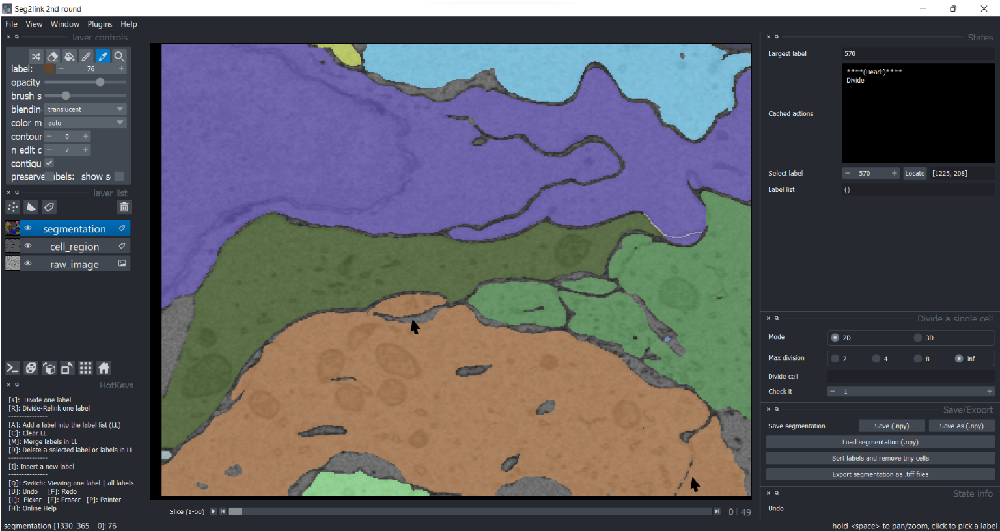
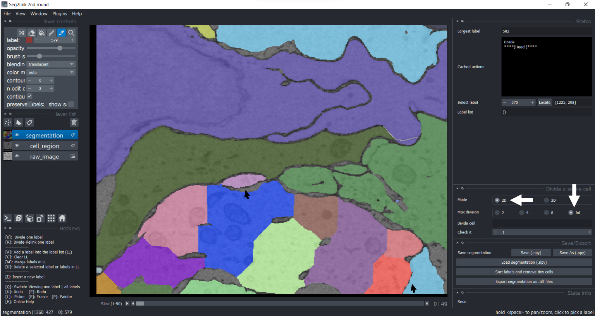
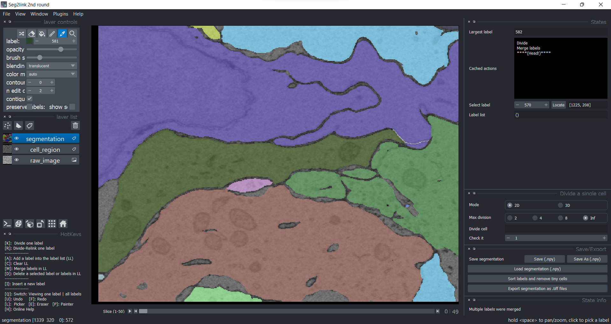
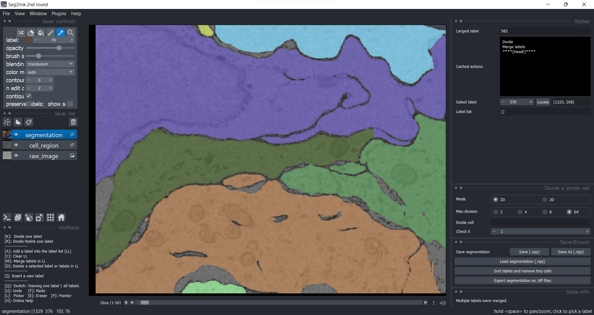
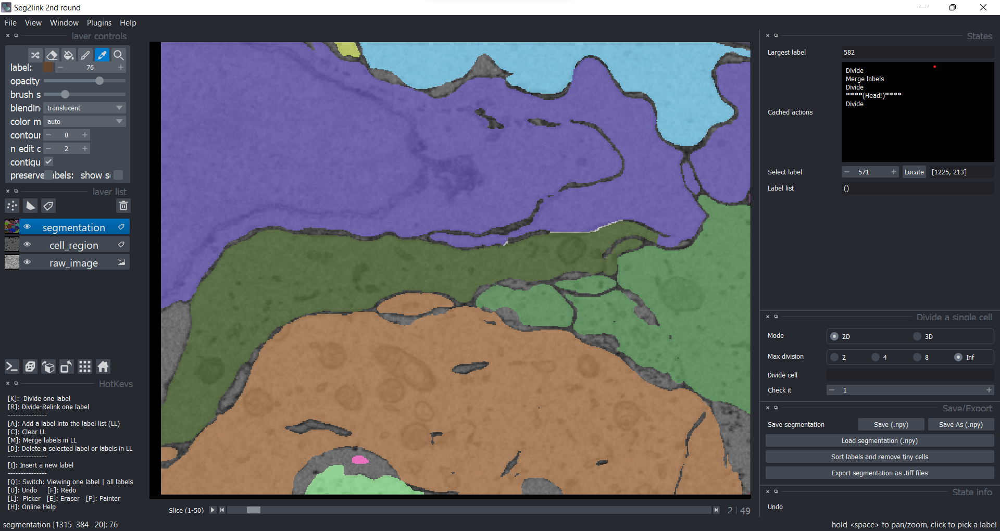
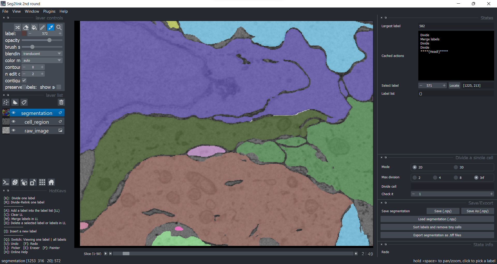

Division / Division + Relink (2D)
Division
-
The label 76 in slice 1 should be divided into 3 cells.

-
Choose 2D mode and max division = Inf.
Click the label 76 in Picker Mode. Then press K to divide it. 
-
The label was over-segmented with 2D watershed algorithm.
-
If necessary, correct the cell boundary before pressing K to more precisely divide the cell.
-
-
Correct the over-segmentation by Merge.

Division+Relink
-
The label 76 in slice 1 has been divided into 3 cells, but the same label in slice 2 requires similar division.

-
Click the label 76 in Picker Mode. Then press R to divide it and relink the results to slice 1.
The over-segmentation was solved automatically by relinking.
-
The label 76 in slice 3 also requires similar division.

Similarly, press R solves the problem.
